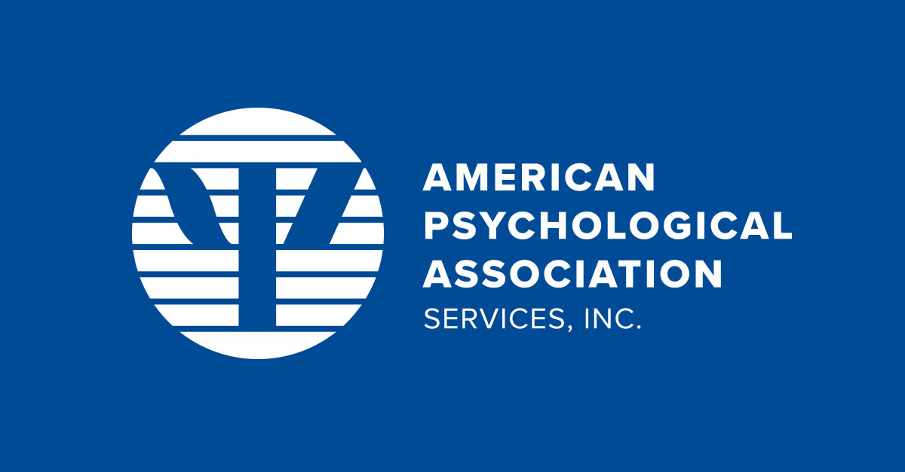
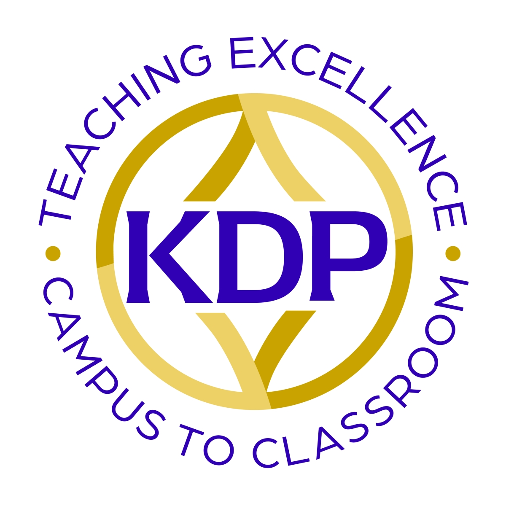
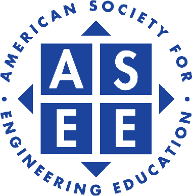
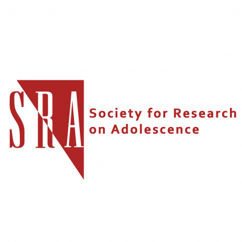
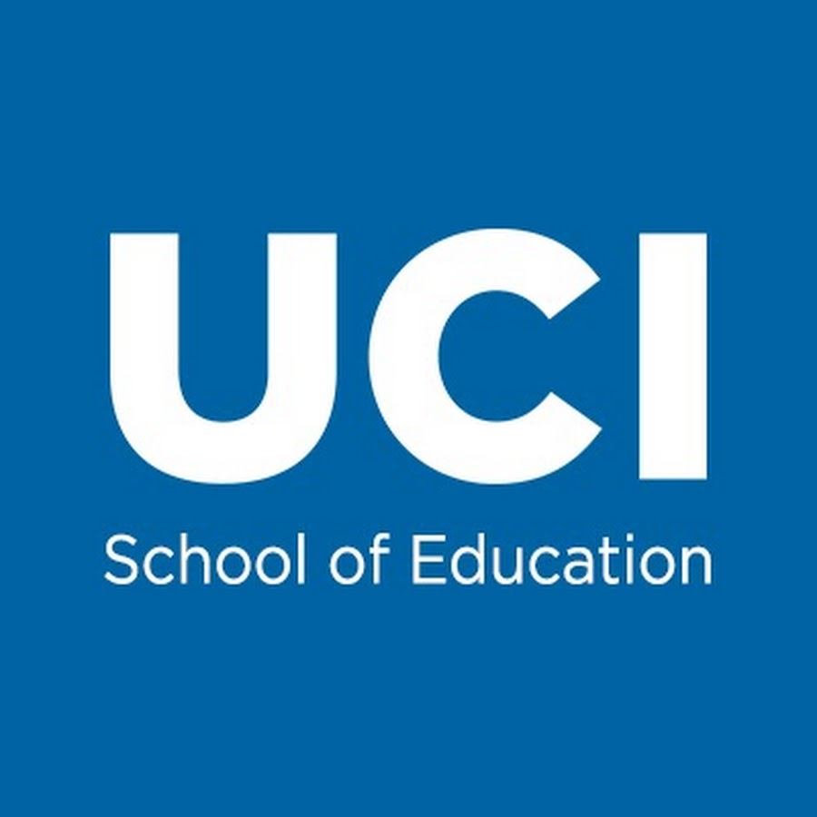
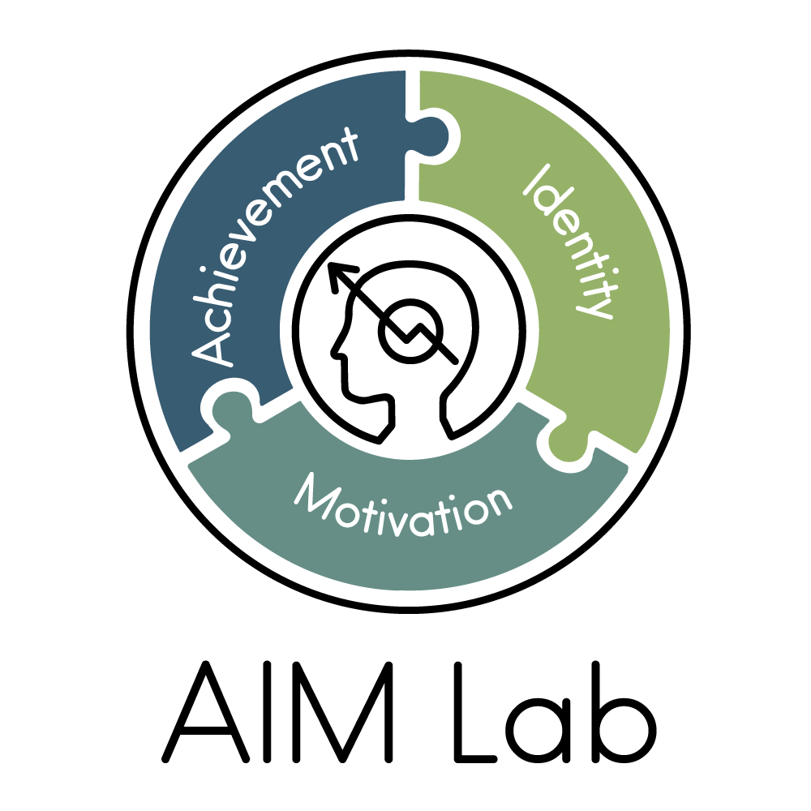
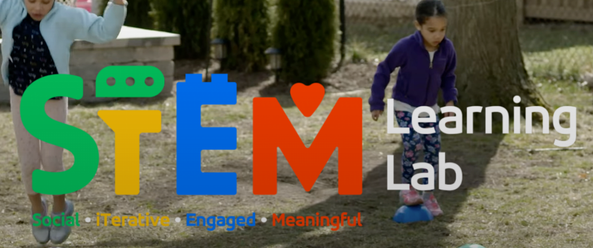

My Education
I am grateful for the three years of studying at UCI. Here I found the direction I want to strive for all my life. The knowledge about education, cognitive science, psychology, and statistics learned here laid the foundation for my future study and work. The professors and research resources here also allow me to know more about educational research and improve myself.
I will be enrolled in Human development and Education master's program (HDE) in Harvard Graduate School of Education in Fall 2023.
My Experience
| 
APA- American Psychological Association American Psychological Association (APA) Student Member 2022.11- Now |

KDP- Kappa Delta Pi Honor Society Home - Kappa Delta Pi (kdp.org) American Psychological Association (APA) Honor Society Member 2022.11- Now |
| 
ASEE- American Society for Engineering Education Student Member- 2022.12-Now |

SRA-Society for Research on Adolescence Student Member- 2022.12- Now |
| 
University of California, Irvine Peer assistant for EDUC 179W: Advanced Writing for Education Science 2022.1– 2022.6 Peer assistant for EDUC 10: Education Research Design 2022.9- 2022.12 Motivation and Identity Research Lab (MIRL) Research Assistant 2022.3-2022.12 |

Achievement, Identity and Motivation Lab (AIM) Academic Website: Hye Rin Lee, 2020 – 2020 (wordpress.com) Research Assistant 2022.3- Now |
| 
Social, iTerative, Engaged, Meaningful Learning Lab (STEM Learning Lab) Stem Learning Lab – Social, iterative, Engaged, & Meaningful (uci.edu) Research Assistant 2022.9- Now |